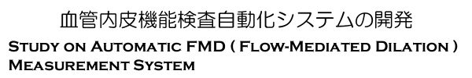
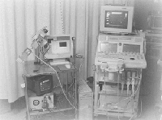
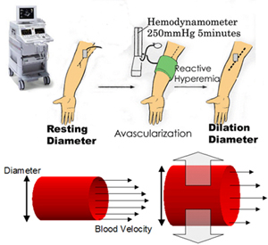
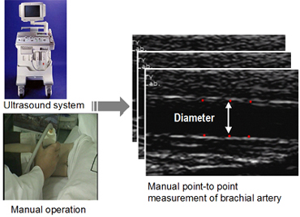
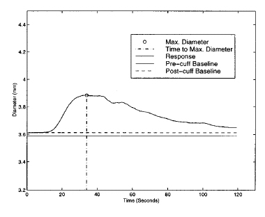
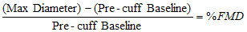

|

|
東京大学大学院新領域創成科学研究科
東京大学大学院情報理工学系研究科
東京大学大学院医学系研究科
広島大学大学院医歯薬学総合研究科
|

|
研究背景
現在動脈硬化度の非侵襲的な計測法として血管内皮機能検査法が考案されている。この検査法の概要は、被験者の上腕動脈において、安静時に対する駆血解除後の血管径増加率を％ＦＭＤ(Flow-Mediated Dilation)として計測するものである。％ＦＭＤの値が指標となっており、値の大きな患者ほど動脈硬化の危険度が高いことを示す。血管径の計測には超音波画像を用いており、画像の取得、血管径の認識は医師の手と目によって行われる。そのため現在の手法では、検査者間・検査施設間において再現性が低い、検査に時間がかかるなどの問題点が生じており、検査を自動化することでの再現性の高い、簡便な検査の実現が望まれている[1]。
|
 |
 |
| Fig. 1. FLOW-MEDIATED DILATATION |
Fig. 2. FMD MEASUREMENT |
|
血流依存性血管拡張反応は、安静時に下腕部を５分間駆血した後解除する事で生じる。血流量の増加により血管内皮細胞から血管拡張物質（ＮＯ）が放出され、血管が拡張する反応である。動脈硬化の危険因子度が高いと拡張度合いが低くなる。このため、血流依存性血管拡張反応における血管径の増加度を検査する事で動脈硬化の危険因子度を検査する事ができる。
|
医師は超音波画像診断装置を用いて被験者の上腕動脈画像の長軸画像を取得する。画像取得は血流依存性血管拡張反応が生じている３分間にわたって行われる。このため手ぶれによって画像が乱れる問題が発生する。血管径の計測は、血管壁と思われる３組に印をつけてその平均を求めている。３分間にわたってこの作業を行うため、検査には長い時間を要する。また再現性が低いなどの問題点も挙げられる。
|
|
 |
|
 |
| Fig. 3. A TYPICAL BRACHIAL ARTERY FLOW-MEDIATED VASODILATOR RESPONSE[2] |
|
23 歳の健常男性で血管内皮機能検査を行った時の、血管径の時間的変化を表したグラフ。文献[1]によると、20代正常男性の17名の平均値は％ＦＭＤとして 10.60±0.75%であり、％ＦＭＤが３～４％以下は動脈硬化のリスクが高いものと考えられている。
|
本研究の目的と方法
本研究では、血管内皮機能検査におけるプローブ操作、血管径計測を自動化することを目的とする。自動化システムは、ＰＣ、プローブ保持ロボット、超音波画像診断装置から構成されている。超音波画像を利用してロボットの位置決めを行い、血管径算出に適した画像を誘導する。その後画像処理を用いて血管壁探索を行う。計測中は血管の特徴値を基に血管の動きに対して自動追従を行う。最後に、計測された拡張反応グラフから％ＦＭＤ値を求める。
研究経過と今後の展望 (2007.5)
本研究ではこれまで、本システムを用いる事で、血管内皮機能検査の自動化が十分可能であるという結果を出してきた。本システムはプローブを自動で位置決め、保持することにより医師によるものに比べ再現性の高い、正確な血管径が計測できることができた。ファントムを用いた実験では血管自動追従システムによって血管の動きを確実に追うことができた。しかしながら、実際の%FMD計測では小さな血管の動きが検知できず、追従機能が働かず、正確な値を出すことができないこともあった。本システムには更なる改良が必要であると判断し、より再現性、精確性の高いシステムを目指し検討中である。
謝辞
本研究の一部は、ＮＥＤＯ医学・工学連携型研究事業として行ったものである。
NEDO ＜新エネルギー・産業技術総合開発機構＞
Related Papers:
| 1 |
橋本正良, 超音波による内皮機能診断, 臨床医, 24(5):789-791, 1998 |
|
2
|
Fan LX; Santago P; Jiang H; Herrington DM
Title: Ultrasound measurement of brachial flow-mediated vasodilator response
Source: IEEE TRANSACTIONS ON MEDICAL IMAGING 2000, Vol 19, Iss 6, pp 621-631 |
| 3 |
廣松馨, 山口喬弘, 佐久間一郎, 小林英津子, 土肥健純, 宮田哲郎, 重松宏, 大内尉義, 吉栖正生: 血管内皮機能検査システムの開発 ～第2報～; 生体医工学第42巻特別号 第43回日本エム・イー学会大会プログラム・論文集, OR12-3 pp.312, 2004. |
| 4 |
Wataru Takeuchi, Takahiro yamaguchi, Dai Yoshida, Ichiro Sakuma, Tatsuhiko Arafune, Etsuko Kobayashi, Yasuhiko Jimbo, Yuko Yamashita, Takashi Mochizuki, Tesuro Miyata, Masao Yoshizumi: Study on automatic FMD (flow-mediated dilatation) measurement system; APCMBE 2005 6th Asian-Pachific Conference on Biomedical Engineering, PA-3-28, 2005. |
| 5 |
寺田知彦, 山口喬弘, 荒船龍彦, 小林英津子, 佐久間一郎, 神保泰彦, 山下優子, 望月剛, 宮田哲郎, 吉栖正生: 血管内皮検査自動化システムの開発; 第3回生活支援工学連合大会 講演予稿集, p48, 2005. |
|